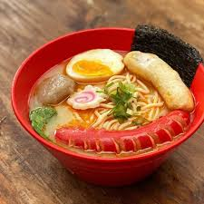

Ramen

Description
I've tried those make-your-own ramen seasoning recipes, but they taste
nothing like ramen in my opinion. This recipe hits the spot, and there is
no MSG or artificial ingredients.
Ingredients
- 4 cups vegetable broth
- 4 cups water
- 1 tablespoon soy sauce
- 1 tablespoon sesame oil
- 1 tablespoon ground ginger
- 1 tablespoon Sriracha hot sauce
- 9 ounces soba noodles
Steps
-
Combine broth, water, soy sauce, sesame oil, ginger, and hot sauce in a
pot; bring to a boil.
-
Add noodles to boiling broth mixture and cook until noodles are tender
yet firm to the bite, 5 to 7 minutes.
-
Transfer noodles to serving bowls and top with desired amount of broth.